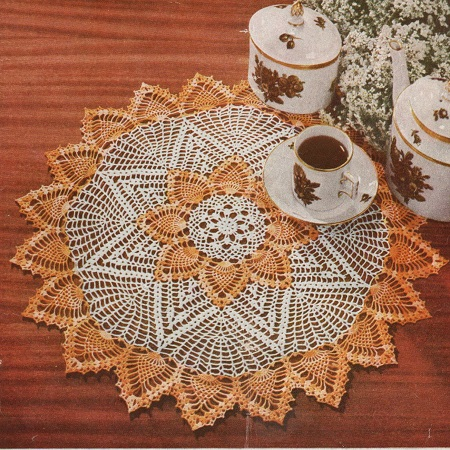

The Pineapple Doily Pattern
MATERIALS:
AMERICAN THREAD COMPANY The Famous "PURITAN" MERCERIZED CROCHET COTTON, Article 40 3 balls Shaded Yellows 2 balls White or colors of your choice
Steel crochet hook No. 7
Approximate size: 26 inches in diameter
or
"GEM" MERCERIZED CROCHET COTTON, Article 35, size 30 2 balls Shaded Yellows 1 ball White or colors of your choice
Steel crochet hook No. 12
Approximate size: 19 inches in diameter.
With White: ch 6, join to form a ring, ch 1 and work 8 sc in ring, join in 1st sc.
2nd Rnd: Ch 3, dc in same space, * ch 2, 2 dc in next sc, repeat from * all around, ch 2, join in 3rd st of ch.
3rd Rnd: * Ch 10, sc in next dc, 1 sc, ch 3, 1 sc in next ch 2 loop, sc in next dc, repeat from * all around ending with ch 10, sc in next dc, 1 sc, ch 3, 1 sc in next ch 2 loop.
4th Rnd: Sl st to center of next loop, ch 3, 4 dc in same space, * ch 7, 5 dc in next ch 10 loop, repeat from * all around, ch 7, join.
5th Rnd: Sl st to center dc of 1st dc group, * ch 3, sc in same space, ch 3, dc in center st of next loop, ch 5, dc in same space, ch 3, sc in center dc of next dc group, repeat from * 6 times, ch 3, sc in same space, ch 3, dc in center st of next loop, ch 5, dc in same space, ch 3, join in same space as beginning.
6th Rnd: Sl st to ch 5 loop, ch 3, 2 dc in same space keeping last loop of each dc on hook, thread over and work off all loops at one time, * ch 4, cluster st in same space ( cluster st: 3 dc in same space keeping last loop of each dc on hook, thread over and work off all loops at one time), repeat from * twice, * ch 7, 4 cluster sts with ch 4 between each cluster st in next ch 5 loop, repeat from * all around, ch 7, join.
7th Rnd: Sl st into 1st ch 4 loop, * ch 5, sc in next loop, ch 5, sc in next loop, ch 5, sc in center st of next loop, ch 5, sc in next loop, repeat from * all around ending with ch 2, dc in sl st.
8th Rnd: * Ch 5, sc in next loop, repeat from * all around ending with ch 2, dc in dc.
9th Rnd: Ch 8, dc in same space, * ch 3, sc in center st of next loop, ch 3, sc in same space, ch 3, 1 dc, ch 5, 1 dc center st of next loop, repeat from * all around ending with ch 3, sc in center st of next loop, ch 3, sc in same space, ch 3, join in 3rd st of ch 8, cut White.
10th Rnd: Attach Shaded Yellows in any ch 5 loop directly over the 4 cluster group of 6th round, ch 3, 2 dc, ch 3, 3 dc in same space, *ch 5, 9 tr c in next ch 5 loop, ch 5, 3 dc, ch 3, 3 dc ( shell) in next ch 5 loop, repeat from * all around ending with ch 5, 9 tr c in next ch 5 loop, ch 5, join.
11th Rnd: Sl st to center of shell, ch 3 ( counts as part of 1st shell ), 2 dc, ch 3, 3 dc in same space, * ch 5, 1 tr c in each of the next 9 tr c with ch 1 between each tr c, ch 5, 3 dc, ch 3, 3 dc ( shell) in center of next shell ( all shells will be made in same manner for remainder of doily except where stated otherwise), repeat from * all around ending to correspond, ch 5, join.
12th Rnd: Sl st to center of shell, ch 3, shell in same space, ** ch 5, sc between 1st 2 tr c, * ch 4, sc in next ch 1 space, repeat from * 6 times, ch 5, shell in next shell, repeat from ** all around ending to correspond, ch 5, join.
13th Rnd: Sl st to center of shell, ch 3, shell in same space, ch 3, 3 dc in same space, ** ch 5, skip 1 loop, sc in next loop, * ch 4, sc in next loop, repeat from * 5 times, ch 5, shell in next shell, ch 3, 3 dc in same space, repeat from ** all around ending to correspond, ch 5, join.
14th Rnd: Sl st across 1st 3 dc, across ch and next 3 dc and into next loop, ch 3, shell in same space, ** ch 5, skip 1 loop, sc in next loop, ch 4, sc in next loop, repeat from * 4 times, ch 5, shell in 1st ch 3 loop of next shell, ch 1, turn, sl st to center of shell, ch 3, shell in same space, ch 5, skip 1 loop, sc in next loop, work 4-ch 4 loops across pineapple, ch 5, shell in next shell, ch 1, turn, sl st to center of shell, ch 3, shell in same space, ch 5, skip 1 loop, sc in next loop, work 3-ch 4 loops across pineapple, ch 5, shell in next shell, ch 1, turn, sl st to center of shell, ch 3, shell in same space, ch 5, skip 1 loop, sc in next loop, work 2-ch 4 loops across pineanple, ch 5, shell in next shell, ch 1, turn, sl st to center of shell, ch 3, shell in same space, ch 5, skip 1 loop, sc in next loop, ch 4, sc in next loop, ch 5, shell in next shell, ch 1, turn, sl st to center of shell, ch 3, shell in same space, ch 5, sc in remaining loop of pineapple, ch 5, shell in next shell, ch 1, turn, sl st to center of shell, ch 3, shell in same space, shell in next shell, ch 1, turn, sl st to center of shell, ch 3, 2 dc in same space, 3 dc in center of next shell,
cut thread.
With right side of work toward you, attach Shaded Yellows in next ch 3 loop of same divided shell of 13th round, ch 3, shell in same space, repeat from ** 7 times ( 8 pineapples completed ).
1st Row around Pineapples. With right side of work toward you attach White in 1st dc at top of pineapple, ch 6, dc in same space, ** ch 3, skip 4 dc, 1 dc, ch 3, 1 dc in next st, * ch 3 and working down side of pineapple, skip 1 row, 1 dc, ch 3, 1 dc in point of next row, repeat from * twice, skip last row of same pineapple and 1st row on side of next pineapple, 1 dc, ch 3, 1 dc ( single shell) in point of next row, * ch 3, skip 1 row, 1 dc, ch 3, 1 dc in point of next row, repeat from * twice, repeat from ** all around ending to correspond, ch 3, join in 3rd st of ch.
2nd Rnd: Sl st into loop, ch 3, 2 dc in same space keeping last loop of each dc on hook, thread over and work off all loops at one time, ch 3, cluster st in same space, ** ch 4, 1 dc, ch 3, 1 dc in center st of next loop, ch 4, 2 cluster sts with ch 3 between in next loop, * ch 4, skip 1 loop, 1 dc, ch 3, 1 dc in next loop, repeat from * once, ch 4, skip 1 loop, cluster st in next loop, ch 1, cluster st in next loop, * ch 4, skip 1 loop, 1 dc, ch 3, 1 dc in next loop, repeat from * once, ch 4, skip 1 loop; 2 cluster sts with ch 3 between in next loop, repeat from ** all around ending to correspond, ch 4, join in 1st cluster st.
3rd Rnd: Sl st into loop, ch 3 ( counts as part of 1st cluster st at beginning of each round ), cluster st in same space, ch 3, cluster st in same space, ** ch 4, skip 1 loop, 5 dc with ch 1 between each dc in next loop, ch 4, skip 1 loop, 2 cluster sts with ch 3 between in next loop, * ch 4, single shell in next single shell, repeat from * once, ch 3, cluster st in ch 1 space between next 2 cluster sts, ch 3, sl st in top of cluster st for picot, ch 3, single shell in next single shell, ch 4, single shell in next single shell, ch 4, 2 cluster sts with ch 3 between in loop between next 2 cluster sts, repeat from * all around ending to correspond, ch 4, join.
4th Rnd: Sl st to center of shell, ch 3, 2 cluster sts with ch 3 between in same space, ** ch 4, 1 dc in each of the next 5 dc with ch 3 between each dc, ch 4, 2 cluster sts with ch 3 between in loop between next 2 cluster sts, ch 4, single shell in next single shell, ch 4, 2 cluster sts with ch 3 between in next single shell, ch 1, 2 cluster sts with ch 3 between in next single shell, ch 4, single shell in next single shell, ch 4, 2 cluster sts with ch 3 between in loop between next 2 cluster sts, repeat from ** all around ending to correspond, ch 4, join.
5th Rnd: Sl st to center of shell, ch 3, 2 cluster sts with ch 3 between in same space, * ch 4, 1 dc in each of the next 5 dc with ch 4 between each dc, ch 4, 2 cluster sts with ch 3 between in loop between next 2 cluster sts, ch 4, single shell in next single shell, ch 4, cluster st between next 2 cluster sts, ch 1, cluster st between next 2 cluster sts, ch 4, single shell in next single shell, ch 4, 2 cluster sts with ch 3 between in loop between next 2 cluster sts, repeat from * all around ending to correspond, ch 4, join.
6th Rnd: Sl st to center of shell, ch 3, 2 cluster sts with ch 3 between in same space, * ch 4, 1 dc in each of the next 3 dc with ch 4 between each dc, ch 4, dc in same space, ch 4, 1 dc in each of the next 2 dc with ch 4 between each dc, ch 4, skip 1 loop, 2 cluster sts with ch 3 between in next loop, ch 4, single shell in next single shell, ch 4, skip 1 loop, cluster st in ch 1 space between next 2 cluster sts, ch 3, sl st in top of cluster st for picot, ch 4, single shell in next single shell, ch 4, skip 1 loop, 2 cluster sts with ch 3 between in loop between next 2 cluster sts, repeat from * all around ending to correspond, ch 4, join.
7th Rnd: Sl st to center of shell, ch 3, 2 cluster sts with ch 3 between in same space, * ch 4, dc in next dc, ch 4, dc. in next dc, ch 4, skip 1 loop, 5 dc with ch 3 between each dc in next loop, ch 4, skip 1 loop, dc in next dc, ch 4, dc in next dc, ch 4, 2 cluster sts with ch 3 between in loop between next 2 cluster sts ( cluster st shell), ch 4, cluster st shell in next single shell, ch 4, cluster st shell in next single shell, ch 4, cluster st shell in next cluster st shell, repeat from * all around ending to correspond, ch 4, join.
8th Rnd: Sl st to center of shell, ch 3, 2 cluster sts with ch 3 between in same space, ch 4, 1 dc in each of the next 9 dc with ch 4 between each dc, ch 4, cluster st shell in next cluster st shell, ch 4, cluster st shell in next cluster st shell. ch 2, cluster st shell in next cluster st shell, ch 4, cluster st shell in next cluster st shell, repeat from * all around ending to correspond, ch 4, join.
9th Rnd: Sl st to center of shell, ch 3, 2 cluster sts with ch 3 between in same space, * ch 5, 1 dc in each of the next 9 dc with ch 5 between each dc, ch 5, cluster st shell in next cluster st shell, ch 4, cluster st in center of next cluster st shell, ch 1, cluster st in center of next cluster st shell, ch 4, cluster st shell in next cluster st shell, repeat from * all around ending to correspond, ch 4, join.
10th Rnd: Sl st to center of shell, ch 3, 2 cluster sts with ch 3 between in same space, * ch 6, 1 dc in each of the next 9 dc with ch 6 between each dc, ch 6, cluster st shell in next cluster st shell, ch 4, skip 1 loop, cluster st in next ch 1 space, ch 3, sl st in top of cluster st for picot, ch 4, cluster st shell in next cluster st shell, repeat from * all around ending to correspond, ch 4, join.
11th Rnd: Sl st to center of shell, ch 3, 2 cluster sts with ch 3 between in same space, * ch 6, 1 dc in each of the next 9 dc with ch 6 between each dc, ch 6, cluster st shell in next cluster st shell, ch 4, cluster st shell in next cluster st shell, repeat from * all around ending to correspond, ch 4, join.
12th Rnd: Sl st to center of shell, ch 3, 2 cluster sts with ch 3 between in same space, * ch 7, 1 dc in each of the next 9 dc with ch 7 between each dc, ch 7, cluster st shell in next cluster st shell, ch 1, cluster st shell in next cluster st shell, repeat from * all around ending to correspond, ch 1, join.
13th Rnd: Sl st to center of shell, ch 3, cluster st in same space, ** ch 7, 1 dc, ch 3, 1 dc in next dc, * ch 5, 1 dc, ch 3, 1 dc in next dc, repeat from * 7 times, ch 7, cluster st in center of next cluster st shell, ch 1, cluster st in next cluster st shell, repeat from ** all around ending to correspond, ch 1, join.
14th Rnd: Ch 3, cluster st in the ch 1 space just made, ** ch 3, sl st in top of cluster st for picot, ch 7, single shell in next single shell, * ch 5, single shell in next single shell, repeat from * 7 times, ch 7, cluster st between next 2 cluster sts, repeat from ** all around ending to correspond, ch 7, join,
cut thread.
15th Rnd: Attach Shaded Yellows in any picot, ch 3, 2 dc, ch 3, 3 dc in same space, * ch 5, skip 1 loop, 3 sc in next loop, ch 3, sl st in top of last sc for picot, 2 sc in same loop, ch 5, skip 1 loop, 9 tr c in next loop, ch 5, skip 1 loop, 3 sc, picot, 2 sc in next loop, ch 5, skip 1 loop, 3 dc, ch 3, 3 dc ( shell) in next loop, repeat from * once, ch 5, skip 1 loop, 3 sc, picot, 2 sc in next loop, ch 5, 9 tr c in next picot, * ch 5, skip 1 loop, 3 sc, picot, 2 sc in next loop, ch 5, skip 1 loop, shell in next loop, ch 5, skip 1 loop, 3 sc, picot, 2 sc in next loop, ch 5, skip 1 loop, 9 tr c in next loop, repeat from * once, ch 5, skip 1 loop, 3 sc, picot, 2 sc in next loop, ch 5, shell in next picot, repeat from 1st * all around ending to correspond, ch 5, join.
16th Rnd: Sl st to center of shell, ch 3, shell in same space, * ch 7, 1 tr c in each of the next 9 tr c with ch 2 between each tr c, ch 7, shell in next shell, repeat from * all around ending to correspond, ch 7, join.
17th Rnd: Sl st to center of shell, ch 3, shell in same space, ** ch 7, sc between 1st 2 tr c, * ch 4, sc in next ch 2 loop, repeat from * 6 times, ch 7, shell in next shell, repeat from ** all around ending to correspond, ch 7, join.
18th Rnd: Same as 13th round of 1st pineapple section but having ch 7 before and after each pineapple instead of ch 5. Finish each pineapple same as previous pineanple starting at 14th round but always working ch 7 instead of ch 5 before and after each pineapple.
EDGE: Attach Shaded Yellows in 1st dc at top of pineapple, ** ch 3, cluster st in space at top of pineapple between the 2 dc groups, ch 3, sl st in top of cluster st for picot, ch 3, sl st in top of next row, working down side of pineapple, ch 3, sl st in top of next row, * ch 3, dc in top of next row, ch 4, sl st in 3rd st from hook for picot, ch 1, dc in same space, ch 3, sl st in top of next row, repeat from * twice, ch 3, sl st in 1st free row on side of next pineapple, * ch 3, dc in top of next row, ch 4, sl st in 3rd st from hook for picot, ch 1, dc in same space, ch 3, sl st in top of next row, repeat from * twice, ch 3, sl st in top of next row, repeat from ** all around ending to correspond, join,
cut thread.
HOME